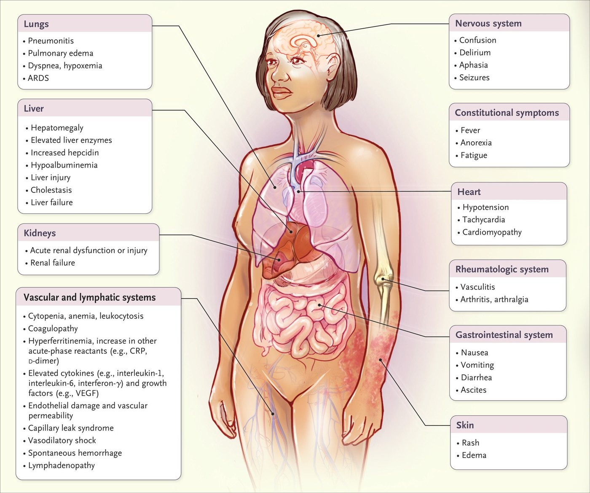
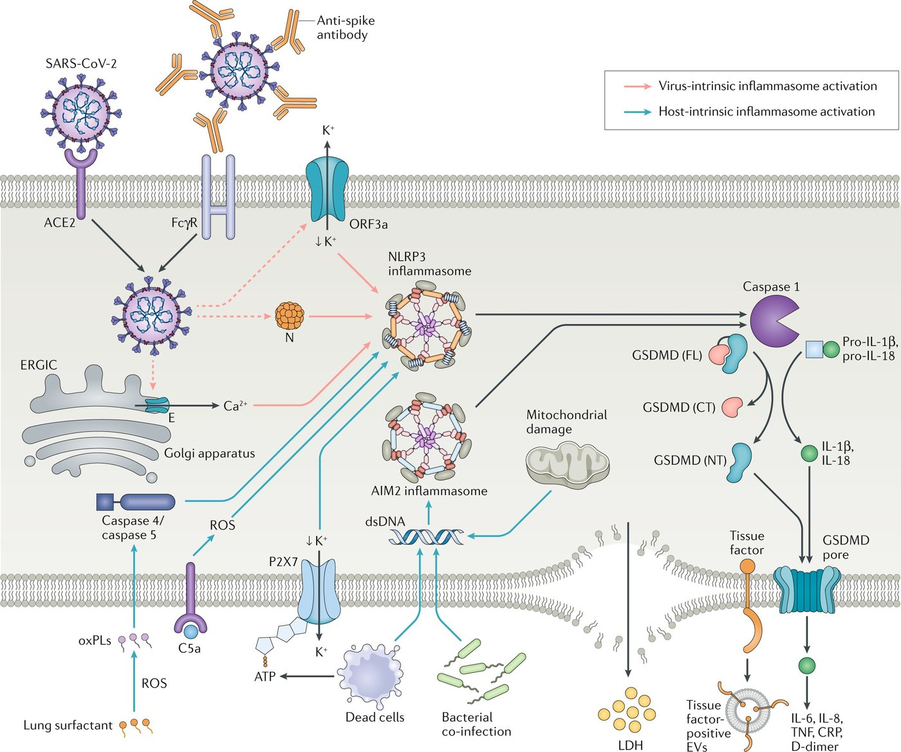
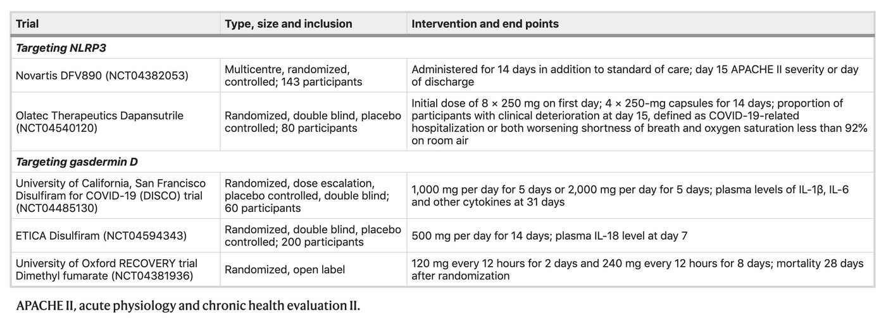

When It Goes Wrong — Storm, Disease, Therapyوقتی از کنترل خارج میشود — طوفان، بیماری، درمان
Everything in Parts 6 and 7 is a mechanism for making inflammation. Nothing in them is a mechanism for making too much inflammation — that requires only that the same machinery run without limit. This Part is the clinical consequence, and it is where the whole of these two lectures becomes medicine.هر چه در بخشهای ۶ و ۷ آمد، سازوکاری برای ساختن التهاب است. هیچیک سازوکاری برای ساختن التهابِ بیش از حد نیست — برای آن کافی است همان ماشین بدون حد و مرز کار کند. این بخش، پیامد بالینی است و همانجاست که تمام این دو درس به طب بدل میشود.
By the end of this Part you should be able toدر پایان این بخش باید بتوانید
Give five beneficial and five deleterious effects of inflammation.پنج اثر سودمند و پنج اثر زیانبار التهاب را بگویید.
Define cytokine storm by its three obligatory components.طوفان سایتوکاینی را با سه جزء الزامیاش تعریف کنید.
Explain two routes by which SARS-CoV-2 activates the inflammasome.دو راهی را که SARS-CoV-2 با آنها اینفلاماسوم را فعال میکند توضیح دهید.
Match at least six anti-cytokine drugs to their targets and their diseases.دستکم شش داروی ضدسایتوکاین را به هدف و بیماریشان وصل کنید.
8.1Inflammation as a Double-Edged Swordالتهاب بهعنوان شمشیر دولبه
Table 8.1 The lecturer's two columnsجدول ۸.۱ — دو ستون مدرّس
Beneficial effectsاثرهای سودمند
Deleterious effectsاثرهای زیانبار
1. Host defence against pathogens — the job it exists for۱. دفاع میزبان در برابر پاتوژنها — کاری که برایش هست
1. Immunopathology — the tissue damage is done by the response, not the microbe۱. ایمنوپاتولوژی — آسیب بافتی را پاسخ میسازد نه میکروب
2. Anti-tumour immunity۲. ایمنی ضدتوموری
2. Autoimmunity۲. خودایمنی
3. Immune homeostasis — including the MyD88 lesson of §6.5۳. هومئوستاز ایمنی — از جمله درس MyD88 در بخش ۶.۵
3. Sepsis۳. سپسیس
4. Tissue repair and wound healing۴. ترمیم بافت و بهبود زخم
4. Fibrosis — repair that does not stop۴. فیبروز — ترمیمی که متوقف نمیشود
5. Adaptation to stress and restoration of homeostasis۵. سازگاری با استرس و بازگرداندن هومئوستاز
5. Tumorigenesis and 6. allergy۵. تومورزایی و ۶. آلرژی
Read the two columns against each otherدو ستون را در برابر هم بخوانید
They are not two lists; they are the same list seen twice. Tissue repair and fibrosis are one process with and without an off-switch. Anti-tumour immunity and tumorigenesis are the same inflammation at different durations — acute inflammation kills tumour cells, chronic inflammation causes them. Host defence and immunopathology are the same response judged by different outcomes: in tuberculosis and in severe COVID-19, most of the lung damage is yours, not the pathogen's.اینها دو فهرست نیستند؛ یک فهرستاند که دو بار دیده شده. ترمیم بافت و فیبروز، یک فرایندند با و بدون کلید خاموش. ایمنی ضدتوموری و تومورزایی، یک التهاباند با مدتهای متفاوت — التهاب حاد سلول توموری را میکشد، التهاب مزمن میسازدش. دفاع میزبان و ایمنوپاتولوژی، یک پاسخاند که با نتایج متفاوت داوری شدهاند: در سل و در کووید-۱۹ شدید، بیشتر آسیب ریه از آنِ شماست، نه پاتوژن.
The clinical corollary is uncomfortable and important: there is no drug that gives you column one without touching column two. Every anti-inflammatory you will prescribe trades some host defence for some relief, and the whole skill is judging the exchange rate in the patient in front of you.نتیجهٔ بالینیاش ناخوشایند و مهم است: دارویی نیست که ستون یک را بدهد و ستون دو را دست نزند. هر ضدالتهابی که تجویز خواهید کرد، مقداری دفاع میزبان را با مقداری تسکین معاوضه میکند، و تمام مهارت در سنجیدن نرخ این معاوضه در بیمار پیش روی شماست.
8.2Cytokine Stormطوفان سایتوکاینی
Definition — three components, all obligatoryتعریف — سه جزء، همه الزامی
A cytokine storm requires all three of: (1) elevated circulating cytokine levels, (2) acute systemic inflammatory symptoms, and (3) secondary organ dysfunction — most often renal, hepatic or pulmonary — beyond that attributable to the inciting pathogen itself.طوفان سایتوکاینی هر سهٔ اینها را لازم دارد: (۱) بالا رفتن سطح سایتوکاینهای در گردش، (۲) علائم التهابی سیستمیک حاد، و (۳) اختلال عملکرد ثانویهٔ اندام — بیشتر کلیوی، کبدی یا ریوی — فراتر از آنچه به خود پاتوژن آغازگر نسبت داده میشود.

Fig 8.1 The clinical presentation, organ by organ. Constitutional: fever, anorexia, fatigue. Lungs: pneumonitis, pulmonary oedema, ARDS. Nervous system: confusion, delirium, seizures. Heart: hypotension, tachycardia, cardiomyopathy. Liver: hepatomegaly, transaminitis, hypoalbuminaemia, hyperferritinaemia. Kidneys: acute renal dysfunction. Vascular and lymphatic: cytopenias, coagulopathy, capillary leak, vasodilatory shock, spontaneous haemorrhage, lymphadenopathy, raised CRP, IL-6, IFN-γ, D-dimer and VEGF. Skin: rash, oedema. Note how many of these you can now derive: hypotension is TNF and IL-1 on the endothelium; fever is IL-1 and IL-6 on the hypothalamus; hypoalbuminaemia and raised CRP are the hepatic acute-phase response of Fig 6.14.تظاهر بالینی، اندام به اندام. عمومی: تب، بیاشتهایی، خستگی. ریه: پنومونیت، ادم ریوی، ARDS. سیستم عصبی: گیجی، دلیریوم، تشنج. قلب: افت فشار، تاکیکاردی، کاردیومیوپاتی. کبد: بزرگی کبد، افزایش ترانسآمینازها، هیپوآلبومینمی، هیپرفریتینمی. کلیه: اختلال حاد عملکرد. عروقی و لنفاوی: سیتوپنی، اختلال انعقاد، نشت مویرگی، شوک وازودیلاتوری، خونریزی خودبهخودی، لنفادنوپاتی، افزایش CRP، IL-6، IFN-γ، D-dimer و VEGF. پوست: راش، ادم. توجه کنید چند تای اینها را اکنون میتوانید استنتاج کنید: افت فشار یعنی TNF و IL-1 روی اندوتلیوم؛ تب یعنی IL-1 و IL-6 روی هیپوتالاموس؛ هیپوآلبومینمی و CRP بالا همان پاسخ فاز حاد کبدی شکل ۶.۱۴ است.
Clinical Correlation — the five settings you will actually meetارتباط بالینی — پنج موقعیتی که واقعاً خواهید دید
Sepsis — the original and commonest. LPS on TLR4 in every macrophage at once.سپسیس — نخستین و شایعترین. LPS روی TLR4 در همهٔ ماکروفاژها، همزمان.
CAR-T cell therapy — cytokine release syndrome is the signature toxicity of the CD19 CAR-T cells you met in §1.3, and the standard treatment is tocilizumab, an anti-IL-6 receptor antibody.درمان با سلول CAR-T — سندرم آزادسازی سایتوکاین سمّیت شاخص همان سلولهای CAR-T ضد CD19 است که در بخش ۱.۳ دیدید، و درمان استاندارد توسیلیزوماب است، آنتیبادی ضد گیرندهٔ IL-6.
HLH and macrophage activation syndrome — often driven by defects in perforin-mediated killing, so the activated macrophage is never switched off. One of its diagnostic criteria is a raised soluble CD25 (§4.3).HLH و سندرم فعالسازی ماکروفاژ — اغلب ناشی از نقص در کشتار با واسطهٔ پرفورین، پس ماکروفاژ فعال هرگز خاموش نمیشود. یکی از معیارهای تشخیصیاش بالا بودن CD25 محلول است (بخش ۴.۳).
Severe influenza and severe COVID-19 — §8.3.آنفلوانزای شدید و کووید-۱۹ شدید — بخش ۸.۳.
Anti-CD28 superagonist (TGN1412), 2006 — six healthy volunteers given a drug designed to deliver signal 2 without signal 1 developed multi-organ failure within hours. The three-signal model of Part 2 is not an abstraction.سوپرآگونیست ضد CD28 (TGN1412)، ۲۰۰۶ — شش داوطلب سالم که دارویی گرفتند طراحیشده برای رساندن سیگنال ۲ بدون سیگنال ۱، ظرف چند ساعت دچار نارسایی چنداندامی شدند. مدل سهسیگنالی بخش ۲ انتزاع نیست.
8.3The Inflammasome in Severe COVID-19اینفلاماسوم در کووید-۱۹ شدید

Fig 8.2 Two routes, drawn in two colours. Virus-intrinsic (red): SARS-CoV-2 enters via ACE2; its ORF3a, E and N proteins disturb ion flux and Golgi and mitochondrial integrity, giving K⁺ efflux, Ca²⁺ flux, ROS and released mitochondrial DNA — which activate NLRP3 and AIM2. Host-intrinsic (blue): antibody-coated virus taken up through FcγR, complement C5a, dying cells, bacterial co-infection and lung surfactant. Both converge on caspase-1, GSDMD pores, IL-1β and IL-18, and — importantly — on tissue factor and tissue-factor-positive extracellular vesicles, which is the mechanistic link to the raised D-dimer and the thrombosis of severe COVID-19.دو راه، به دو رنگ. ذاتیِ ویروس (قرمز):SARS-CoV-2 از راه ACE2 وارد میشود؛ پروتئینهای ORF3a، E و Nش جریان یونی و تمامیت گلژی و میتوکندری را بر هم میزنند و خروج پتاسیم، جریان کلسیم، ROS و آزادشدن DNA میتوکندریایی میدهند — که NLRP3 و AIM2 را فعال میکنند. ذاتیِ میزبان (آبی): ویروسِ پوشیده از آنتیبادی که از راه FcγR برداشته میشود، C5aی کمپلمان، سلولهای در حال مرگ، همعفونتی باکتریایی و سورفاکتانت ریه. هر دو به کاسپاز ۱، منفذهای GSDMD، IL-1β و IL-18 و — مهمتر — به فاکتور بافتی و وزیکولهای خارجسلولی مثبت از نظر فاکتور بافتی میرسند، که پیوند سازوکاری با بالا رفتن D-dimer و ترومبوز کووید-۱۹ شدید است.
Three things this figure lets you explainسه چیزی که این شکل میگذارد توضیح دهید
Why severe COVID-19 is a thrombotic disease. Inflammasome activation induces tissue factor. Inflammation and coagulation are not neighbours; they are the same pathway.چرا کووید-۱۹ شدید بیماری ترومبوتیک است. فعالشدن اینفلاماسوم فاکتور بافتی را القا میکند. التهاب و انعقاد همسایه نیستند؛ یک مسیرند.
Why antibody can make it worse. Uptake of antibody-coated virus through FcγR is a host-intrinsic activator — the antibody-dependent enhancement you met in Session 2 §6.4, arriving here by a different route.چرا آنتیبادی میتواند بدترش کند. برداشت ویروسِ پوشیده از آنتیبادی از راه FcγR فعالکنندهای ذاتی از سوی میزبان است — همان تقویت وابسته به آنتیبادی که در جلسهٔ ۲ بخش ۶.۴ دیدید، که اینجا از راهی دیگر میرسد.
Why dexamethasone works and antivirals given late do not. By the time a patient is hypoxic, the problem is no longer viral replication — it is this diagram. Treat the response, not the virus.چرا دگزامتازون کار میکند و ضدویروسِ دیرهنگام نه. وقتی بیمار هیپوکسیک شده، مسئله دیگر تکثیر ویروس نیست — همین نمودار است. پاسخ را درمان کنید، نه ویروس را.
8.4Targeting Cytokines and the Inflammasomeهدفقراردادن سایتوکاینها و اینفلاماسوم
Table 8.2 The anti-cytokine pharmacopoeia — every one of these targets a molecule in this guideجدول ۸.۲ — داروهای ضدسایتوکاین — هر کدام مولکولی از همین جزوه را هدف میگیرد
Trials across gout, heart failure, neuroinflammation and sepsisکارآزماییها در نقرس، نارسایی قلبی، التهاب عصبی و سپسیس
Excess proves function — CAPS and the NLRP3 gain-of-function syndromesزیادیاش کارش را ثابت میکند — CAPS و سندرمهای افزایش عملکرد NLRP3
Everywhere else in these two guides, function has been proved by absence. Here it is proved by excess. Cryopyrin-associated periodic syndromes (CAPS) are caused by gain-of-function mutations in NLRP3, which make the inflammasome assemble without waiting for signal 2. The three phenotypes form a severity spectrum:همهجای دیگر این دو جزوه، عملکرد با نبودن ثابت شده است. اینجا با زیاد بودن ثابت میشود. سندرمهای دورهای مرتبط با کرایوپیرین (CAPS) را جهشهای افزایش عملکرد در NLRP3 میسازند، که اینفلاماسوم را بدون انتظار برای سیگنال ۲ مونتاژ میکنند. سه فنوتیپ، طیفی از شدت میسازند:
FCAS — familial cold autoinflammatory syndrome: urticarial rash and fever after cold exposure.FCAS — سندرم خودالتهابی سرمای فامیلی: راش کهیری و تب پس از مواجهه با سرما.
Muckle–Wells syndrome — adds sensorineural deafness and AA amyloidosis.سندرم ماکل–ولز — ناشنوایی حسی-عصبی و آمیلوئیدوز AA را میافزاید.
NOMID / CINCA — neonatal-onset multisystem inflammatory disease: chronic aseptic meningitis, arthropathy, and severe developmental impairment.NOMID / CINCA — بیماری التهابی چنداندامی با شروع نوزادی: مننژیت آسپتیک مزمن، آرتروپاتی و اختلال شدید رشد.
The decisive observation is therapeutic. These children respond dramatically to IL-1 blockade — anakinra or canakinumab — often within days. A single mutation in one sensor, producing one cytokine in excess, blocked by one drug. There is no cleaner demonstration in clinical immunology that a pathway described on a slide is the pathway operating in a patient.مشاهدهٔ تعیینکننده، درمانی است. این کودکان به مسدودسازی IL-1 — آناکینرا یا کاناکینوماب — بهشکل چشمگیری پاسخ میدهند، اغلب ظرف چند روز. یک جهش در یک حسگر، که یک سایتوکاین را زیادی میسازد، با یک دارو مسدود میشود. در ایمونولوژی بالینی نمایشی تمیزتر از این نیست که مسیرِ شرحدادهشده روی یک اسلاید، همان مسیری است که در بیمار کار میکند.
Clinical Correlation — CANTOS, and inflammation as a cardiac risk factorارتباط بالینی — CANTOS، و التهاب بهعنوان عامل خطر قلبی
If cholesterol crystals activate NLRP3 (§7.4), then IL-1β should be driving atherosclerosis, and blocking it should reduce heart attacks independently of cholesterol. The CANTOS trial tested exactly that: canakinumab (anti-IL-1β) in patients with a previous myocardial infarction and a raised CRP. It reduced recurrent cardiovascular events with no change in LDL cholesterol at all — and increased fatal infections, the cost of column two in Table 8.1. The trial converted "inflammation causes atherosclerosis" from a plausible story into a demonstrated, drug-modifiable mechanism.اگر کریستالهای کلسترول NLRP3 را فعال میکنند (بخش ۷.۴)، پس IL-1β باید آترواسکلروز را براند، و مسدودکردنش باید سکتهٔ قلبی را مستقل از کلسترول کاهش دهد. کارآزمایی CANTOS دقیقاً همین را آزمود: کاناکینوماب در بیماران با سابقهٔ انفارکتوس و CRP بالا. رویدادهای قلبیعروقی مکرر را کاهش داد بیآنکه هیچ تغییری در LDL بدهد — و عفونتهای کشنده را افزایش داد، هزینهٔ ستون دوم جدول ۸.۱. این کارآزمایی، «التهاب آترواسکلروز میسازد» را از داستانی محتمل به سازوکاری اثباتشده و قابلتغییر با دارو بدل کرد.

Fig 8.3 Trials of inflammasome-pathway inhibition in COVID-19, split by target: targeting NLRP3 (dapansutrile) and targeting gasdermin D (disulfiram, dimethyl fumarate). Note the endpoints — clinical deterioration, plasma IL-1β and IL-6, mortality. The pathway you learned in Part 7 was being tested in patients while you were in secondary school.کارآزماییهای مهار مسیر اینفلاماسوم در کووید-۱۹، بهتفکیک هدف: هدفگیری NLRP3 (داپانسوتریل) و هدفگیری گاسدرمین D (دیسولفیرام، دیمتیل فومارات). به نقاط پایانی توجه کنید — وخامت بالینی، IL-1β و IL-6 پلاسما، مرگومیر. مسیری که در بخش ۷ آموختید، وقتی شما دبیرستان بودید روی بیماران آزموده میشد.